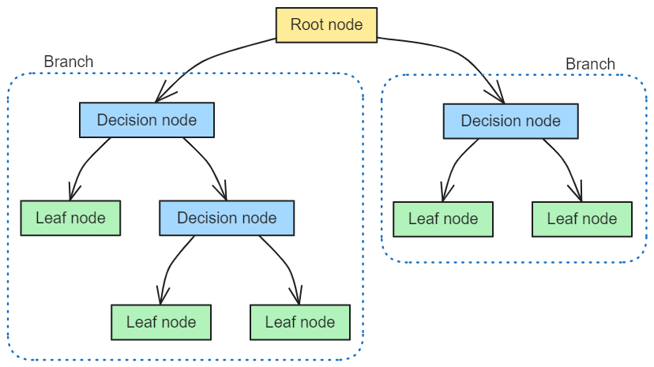

 Hello folks and welcome back to a new update of my blog, which today is finally back focussing on my main field of interest, health economic evaluations! After a couple of months of detour from the topic just to talk about something different for once, I am happy to go back to health economics and, more specifically, how we can use statistics to perform different types of tasks in cost-effectiveness analyses. In particular, today’s topic is quite a broad one and also something that I am not super familiar with myself, namely a specific type of decision analytic models (DAMs) and reasons for using such approach to perform certain types of health economic analyses. I hope that I will be able to quickly summarise the main concepts related to these models and offer a general overview of what they are used for and why so. As a warning for the casual reader: in this post I may use some terms that are specific to the health economics literature and field without diving into too many explanations; when this is the case, please bear with me and perhaps make a quick online search (or check my previous posts) to check if anything is unclear to you. Also, as a more in depth introduction on this topic, I recommend reading the book Khan (2015), specifically Chapter 6. For a look at how to implement more complex types of decision trees in R and perform different types of ancillary analyses, I recommend checking this nice post
Decision Tree Models
When patient-level data are not available (due to limited follow-up time), an alternative approach to estimating the mean costs, effects and incremental cost-effectiveness ratio (ICER) is required. One way is to use published data or data summarised in the clinical study report to build an overarching economic model using evidence from difference sources. This post is particularly focussed on a type of decision models known as Decison Tree as one of the most popular and simple DAGs to implement to perform economic analyses. Decision trees are normally used to predict what would happen in terms of the outcomes (or payoffs) after a decision has been made about a treatment strategy. Each treatment strategy will involve a series of pathways that will ultimately lead to some kind of outcome. Some examples of outcomes common with decision tree analysis are survival, response, life years, and quality-adjusted life years (QALYs). Another element that is also evaluated is the cost of the treatment strategy. Just like the outcomes, each treatment strategy will have costs associated with each pathway. Summing these up for each pathway, an health economist can determine the total cost of that treatment strategy. Decision trees are used to evaluate the value of a treatment strategy by measuring the outcomes alongside the costs associated with each treatment pathway and comparing these to other treatment strategies (e.g. usual care or standard care). This corresponds to a systematic evaluation of the value of a treatment strategy compared to an alternative treatment strategy.
A simple example
A typical decision tree model structure is shown in the figure above: the “tree” has branches that relate to either actions or decisions taken by patients or clinicians, or outcomes (such as measures of treatment effect). The starting point is always a Root node (R), followed by Decision nodes (A and B) denoting a decision between alternative treatments, followed in turn by Leaf nodes (A1, A2, B1 and B2) indicating events. Each branch has a probability, graphically represented via arrows (often expressed as a rate, percentage or proportion), and each decision or leaf node is associated with a specific effects/costs (i.e. some form of payoffs). For each branch, the expected costs and effects are calculated by multiplying the probability of decisions/outcomes by the costs/effects for the branch. The expected costs and effects are then summed up for each treatment and used to derive the ICER of the treatments under comparison. A critical part is the determination of the inputs (i.e. justification for the choice of probabilities, rates, costs, etc.), which are typically obtained from either published clinical trials, observational studies or surveys. An important aspect of designing the “branches” of the tree is understanding the treatment pathway, that is, what happens to patients in terms of their treatment plan and how they are likely to be followed during their treatment programme. For example, in a the very simplified tree structure, the pathway might be:
Root node (R): Patients start taking one of two treatments to treat the disease, let’s say with a chance of 50%, therefore being assigned to one of two alternative decision nodes with a 50% probability (A or B).
Decision node A (or B): Patients may experience some pain relief from taking one of two treatments, each being associated with specific implementation and delivery costs for each individual (say \(C_a=1000\) and \(C_b=500\) euros).
Leaf nodes A1 and A2: About 60% of the patients who undergo treatment A experience pain relief and an improved quality of life (say \(E_{a1}=0.9\) QALYs), while the remaining 40% does not experience any pain relief (say \(E_{a2}=0.6\) QALYs).
Leaf nodes B1 and B2: About 30% of the patients who undergo treatment B experience pain relief and an improved quality of life (say \(E_{b1}=0.8\) QALYs), while the remaining 70% does not experience any pain relief (say \(E_{b2}=0.6\) QALYs).
Now, the objective of decision trees is to estimate the total costs and benefits (in this case measured by QALYs) for the target patient population and the treatments involved so to be able to compare the two alternative options in terms of their total expected costs and benefits generated using standardised health economic measures, e.g. ICER or Net Benefit. For our simple case, we can calculate this in R for an hypothetical patient population cohort of, say, \(n=100000\) subjects and using as model inputs the information detailed before for each branch of the decision tree:
#set number of individuals in cohortn <-100000#set model inputsn_a <- n/2; n_b <- n-n_aC_a <-1000; C_b <-500#treatment costs for each individualE_a1 <-0.9; E_a2 <-0.6#possible QALYs for each individual in arm AE_b1 <-0.8; E_b2 <-0.6#possible QALYs for each individual in arm Bp_a1 <-0.6; p_a2 <-1-p_a1 #prob of resulting in outcome a1 or a2p_b1 <-0.3; p_b2 <-1-p_b1 #prob of resulting in outcome b1 or b2p_a <-0.5 ; p_b <-1- p_a #prob of being assigned to treat A or B#create simple function to "run this model"dectree <-function(n, p_a, p_b, C_a, C_b, E_a1, E_a2, E_b1, E_b2, p_a1, p_a2, p_b1, p_b2){#number of individuals from cohort in each armn_a <- n*p_a; n_b <- n*p_b #total costs for using treat A or B cost_a <- C_a*n_a; cost_b <- C_b*n_b#number of individuals with each possible QALY outcomen_a1 <- n_a*p_a1; n_a2 <- n_a*p_a2n_b1 <- n_b*p_b1; n_b2 <- n_b*p_b2#total QALYs for each possible leaf node QALY_a1 <- n_a1*E_a1; QALY_a2 <- n_a2*E_a2QALY_b1 <- n_b1*E_b1; QALY_b2 <- n_b2*E_b2#sum up QALY results by armQALYs_a <- QALY_a1 + QALY_a2QALYs_b <- QALY_b1 + QALY_b2#store all results in terms of QALYs and costsCosts <-list("A"=cost_a, "B"=cost_b)QALYs <-list("A"=QALYs_a, "B"=QALYs_b)output <-list("Cost"=Costs, "QALYs"=QALYs)return(output)}#run functiondt_model <-dectree(n=100000, p_a=0.5, p_b=0.5, C_a=1000, C_b=500, E_a1=0.9, E_a2=0.6, E_b1=0.8, E_b2=0.6, p_a1=0.6, p_a2=0.4, p_b1=0.3, p_b2=0.7)#printdt_model
As we can see, the model produced as results the total costs and QALYs associated with each treatment arm assuming an initial population cohort size of 100000 and the other model inputs that we provided. We can then derive the average outcomes per treatment arm by dividing the costs and QALYs by the number of individuals assigned to each arm within the cohort, that is:
mu_cA <- dt_model$Cost$A/n_amu_cB <- dt_model$Cost$B/n_bmu_eA <- dt_model$QALYs$A/n_amu_eB <- dt_model$QALYs$B/n_b#avg costs and QALYs in arm Amu_cA; mu_eA
[1] 1000
[1] 0.78
#avg costs and QALYs in arm Bmu_cB; mu_eB
[1] 500
[1] 0.66
Using these summarises, we can compute standardised measures of cost-effectiveness when comparing treatment A and B, such as the ICER and the Net Benefit (NB), after we make an assumption about a plausible value for the decision-maker preferences expressed in terms of a decision threshold value, say \(K=10000\) in our case.
Assuming a value of the threshold parameter of 10000, we can see that treatment A seems to be cost-effective compared to B given the value of the ICER or 4166.6666667 (<K) and a value of the Net Benefit of 700 (>0). Note that for simplicity here I have not considered the need to account for time discount or price inflation which instead may be needed, especially when trying to predict the generation of outcomes in the long term.
What about uncertainty?
Everything seems so easy right? well this is in reality only part of the story since when looking at the values of point statistics such as ICER and NB we are implicitly assuming that there is no uncertainty about these derived values, i.e. everything is obtained in a deterministic way in the model without any source of uncertainty. In reality, decision-makers will never make a decision about reimbursement on the basis of such strong assumptions as the impact of uncertainty on the results should be at least partially captured from the model. This is where uncertainty analysis plays a key role in any type of health economic analysis since it is realistic to assume that there are many possible sources of uncertainty that may affect our results. For example, we may not be so sure about the actual individual implementation/delivery costs per treatment, the actual QALYs associated with presence or absence of relief for each treatment, or even about the chance of experiencing a relief for someone undergoing a given treatment. More realistically, we can use the inputs provided before about all these scenarios as good indicators around which center our model input values but without assuming their values to be constant and identical for everyone in the cohort. To account for this sort of uncertainty about model input values and quantify their impact on the results, probability distributions are often used as they allow to parameterise in a convenient way the level of uncertainty associated with each input in the model. For example, we may want to use a Uniform distribution to express our level of uncertainty around the probability for a patient to experience pain relief or not in each treatment arm, centering these distributions around the assumed value in the determinsitic analysis as good starting point. We can do the same with other model parameters, such as expected QALYs and costs associated with each treatment, taking care that appropriate probability distributions are used to express our level of uncertainty around specific parameter values. Let’s now try to replicate the model run before using these distributions to account for this sort of uncertainty.
#set number of model replications to account for parameter uncertaintyS <-500#create simple function to "run this model"dectree_prob <-function(n, p_a, p_b, C_a_mu, C_a_sigma, C_b_mu, C_b_sigma, E_a1_mu, E_a1_sigma, E_a2_mu, E_a2_sigma, E_b1_mu, E_b1_sigma, E_b2_mu, E_b2_sigma, p_a1_low, p_a1_up, p_a2_low, p_a2_up, p_b1_low, p_b1_up, p_b2_low, p_b2_up, S){#number of individuals from cohort in each armn_a <- n*p_a; n_b <- n*p_b #create empty vectors to contain simulation resultscost_a <- cost_b <-rep(NA, S)QALYs_a <- QALYs_b <-rep(NA, S)for(s in1:S){#assign Gamma distributions to generate costsC_a <-rgamma(1,shape=C_a_mu^2/C_a_sigma^2,scale=C_a_sigma^2/C_a_mu)C_b <-rgamma(1,shape=C_b_mu^2/C_b_sigma^2,scale=C_b_sigma^2/C_b_mu)#assign Uniform distributions to generate prob of each possible QALY outcomep_a1 <-runif(1,min=p_a1_low,max=p_a1_up)p_a2 <-1-p_a1p_b1 <-runif(1,min=p_b1_low,max=p_b1_up)p_b2 <-1-p_b1n_a1 <- n_a*p_a1; n_a2 <- n_a*p_a2n_b1 <- n_b*p_b1; n_b2 <- n_b*p_b2#assign Beta distributions to generate QALY for each possible leaf node E_a1 <-rbeta(1, shape1 = (E_a1_mu*(1-E_a1_mu)/E_a1_sigma^2-1)*E_a1_mu, shape2 = (E_a1_mu*(1-E_a1_mu)/E_a1_sigma^2-1)*(1-E_a1_mu))E_a2 <-rbeta(1, shape1 = (E_a2_mu*(1-E_a2_mu)/E_a2_sigma^2-1)*E_a2_mu, shape2 = (E_a2_mu*(1-E_a2_mu)/E_a2_sigma^2-1)*(1-E_a2_mu))E_b1 <-rbeta(1, shape1 = (E_b1_mu*(1-E_b1_mu)/E_b1_sigma^2-1)*E_b1_mu, shape2 = (E_b1_mu*(1-E_b1_mu)/E_b1_sigma^2-1)*(1-E_b1_mu))E_b2 <-rbeta(1, shape1 = (E_b2_mu*(1-E_b2_mu)/E_b2_sigma^2-1)*E_b2_mu, shape2 = (E_b2_mu*(1-E_b2_mu)/E_b2_sigma^2-1)*(1-E_b2_mu))QALY_a1 <- n_a1*E_a1; QALY_a2 <- n_a2*E_a2QALY_b1 <- n_b1*E_b1; QALY_b2 <- n_b2*E_b2#sum up QALY results by arm#store results for simualtion Scost_a[s] <- C_a*n_acost_b[s] <- C_b*n_bQALYs_a[s] <- QALY_a1 + QALY_a2QALYs_b[s] <- QALY_b1 + QALY_b2}#store all simulation results in terms of QALYs and costsCosts <-list("A"=cost_a, "B"=cost_b)QALYs <-list("A"=QALYs_a, "B"=QALYs_b)output <-list("Cost"=Costs, "QALYs"=QALYs)return(output)}#run functionset.seed(2345) #set rng seed for replicabilitydt_model_prob <-dectree_prob(n=100000, p_a=0.5, p_b=0.5, C_a_mu=1000, C_a_sigma=200, C_b_mu=500, C_b_sigma=150, E_a1_mu=0.9, E_a1_sigma=0.15, E_a2_mu=0.6, E_a2_sigma=0.1, E_b1_mu=0.8, E_b1_sigma=0.15, E_b2_mu=0.6, E_b2_sigma=0.1,p_a1_low=0.35, p_a1_up=0.45, p_b1_low=0.25, p_b1_up=0.35, S=S)#show first 10 simulations for total costs and QALY values per armlapply(dt_model_prob$Cost, head, 10)
We have changed the type of inputs to be provided to the model since now we are using probability distributions to generate input values, which require the need to specify the assumed values associated with the parameters indexing such distributions. For example, we require now the specification of mean and standard deviation for cost inputs per treatment arm (modelled using Gamma distributions), mean and standard deviation for QALY inputs per treatment arm per type of outcome, i.e. pain relief or no relief (modelled using Beta distributions), and lower and upper bounds for the probability of experiencing pain relief in each arm (modelled using Uniform distributions). The core structure of the model remains the same but the need to account for paraemter uncertainty requires the generation of different outcomes depending on the specific values generated by the assumed distributions every time a new “random sample” is drawn from such distributions. The combination of these generated values put together will allow to represent and quantify the uncertainty surrounding the possible outcomes associated with each treatment. In this simple case, we choose a number of replications/simulations equal to 500 but, in general, larger values are typically required to ensure that results are robust to slight variations of the input parameters.
We can now replicate the approach used for the deterministic model by summarising the results in terms of common health economic measures, such as ICER and NB, assuming a acceptance threshold parameter of 10000 for decision-making purposes.
#obtain mean outcome values per treatment per simulationmu_cA <- dt_model_prob$Cost$A/n_amu_cB <- dt_model_prob$Cost$B/n_bmu_eA <- dt_model_prob$QALYs$A/n_amu_eB <- dt_model_prob$QALYs$B/n_b#create data framemu_res <-data.frame(mu_cA,mu_cB,mu_eA,mu_eB)#summary statistics for costs and QALYs by arm across simulationssummary(mu_res)
mu_cA mu_cB mu_eA mu_eB
Min. : 490.4 Min. : 202.9 Min. :0.3749 Min. :0.3903
1st Qu.: 860.1 1st Qu.: 401.0 1st Qu.:0.6798 1st Qu.:0.6062
Median : 990.4 Median : 486.3 Median :0.7301 Median :0.6625
Mean : 995.9 Mean : 501.5 Mean :0.7231 Mean :0.6616
3rd Qu.:1127.5 3rd Qu.: 584.1 3rd Qu.:0.7817 3rd Qu.:0.7236
Max. :1565.7 Max. :1051.5 Max. :0.9139 Max. :0.8721
ICER <- (mu_cA - mu_cB)/(mu_eA - mu_eB)NB <- K*(mu_eA-mu_eB) - (mu_cA - mu_cB)#summary statistics for ICER/NB across simulationssummary(ICER)
Min. 1st Qu. Median Mean 3rd Qu. Max.
-4077649 -2351 2888 -14177 6623 807046
summary(NB)
Min. 1st Qu. Median Mean 3rd Qu. Max.
-4096.7 -597.5 124.3 121.1 988.6 3701.5
Thanks to the implementation of probability distributions to express the degree of uncertainty around the model inputs, we are now able to produce summary statistics around standard measures of cost-effectiveness, such as ICER and NB. In addition, given \(K=10000\), we can also quantify the probability \(p_{AB}\) that treatment A is cost-effective compared to B: using the NB distribution, this is represented by the proportion of NB values that are above \(0\).
#prob of CE at K=10000pCE_nb <-sum(NB>0)/S pCE_nb
[1] 0.574
Finally, another typical source of uncertainty in these analyses is around the value of the acceptance threshold itself, as in many cases governments’ decisions are always characterised by some degree of uncertainty around what value for \(K\) to use. Often this is quantified by computing the above probability of cost-effectiveness for a range of values of \(K\).
#range of values to consider for Kk_value <-seq(from =1000, to =20000, by =50)n_kval <-length(k_value)NB_k <-matrix(NA,nrow = S, ncol = n_kval)p_CE_nb_k <-rep(NA, n_kval) #compute prob CE based on NB at each value of Kfor(k in1:n_kval){for(s in1:S){ NB_k[s,k] <- k_value[k]*(mu_eA[s] - mu_eB[s]) - (mu_cA[s] - mu_cB[s]) } p_CE_nb_k[k] <-sum(NB_k[,k]>0)/S}
and then plot the results in Figure 1 to show what is known as the cost-effectiveness acceptability curve (CEAC), showing how the probability of cost-effectiveness changes as the value of \(K\) is varied.
Figure 1: Example of a typical structure of a decision tree model.
I hope that you found today’s topic interesting as I wanted to explore something different from my usual comfort zone of trial-based analysis. To be honest I am not a huge fan of decision analytic models as they sometimes allow people to play around with the results and choose the inputs to ensure some “good” results are obtained. When the models become very complicated, it is also quite easy to hide some information in the model code which can be hard to detect if you are not expert and have time to do so. Regardless, in many cases it may not even be possible to run a trial to assess cost-effectiveness (e.g. over a lifetime horizon) and reliance on these methods becomes a necessity. This means that care must be used when either building or reviewing these types of models before committing to a final decision that is based on such evidence.
References
Khan, Iftekhar. 2015. Design & Analysis of Clinical Trials for Economic Evaluation & Reimbursement: An Applied Approach Using SAS & STATA. CRC Press.
![]()